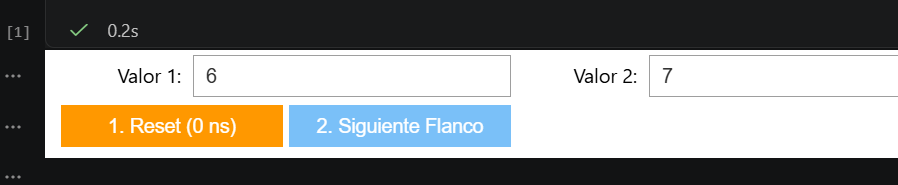
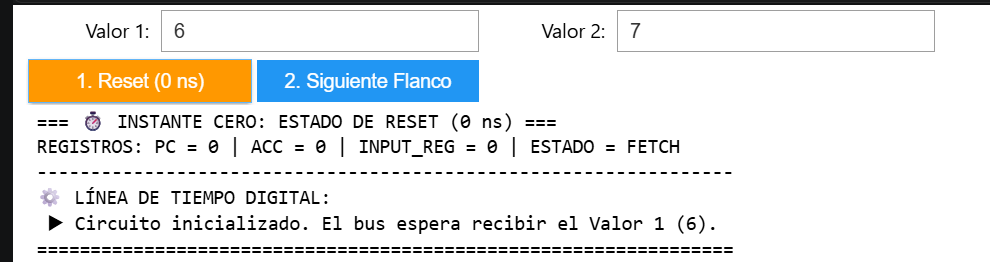
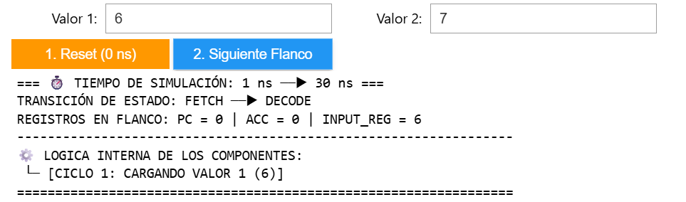
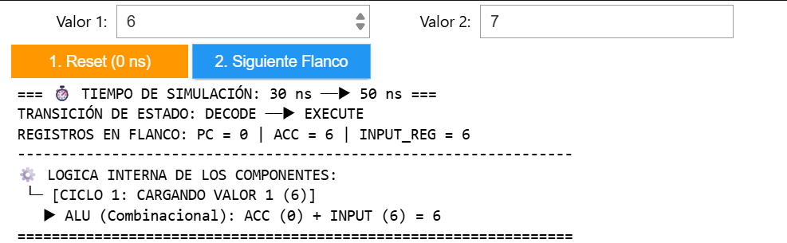
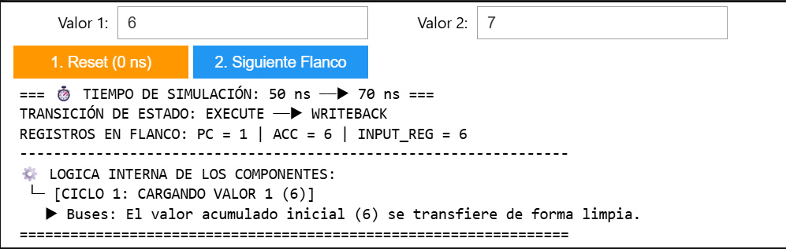
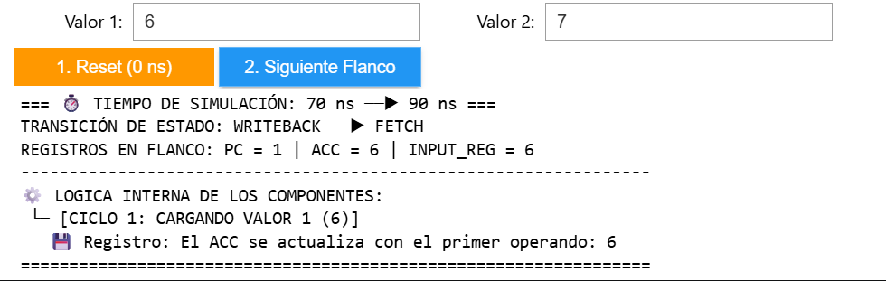
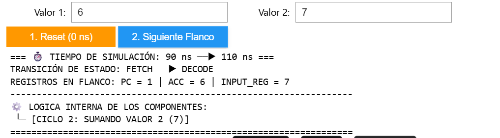
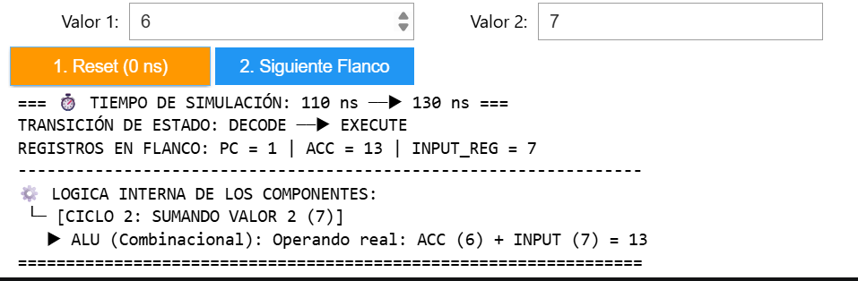
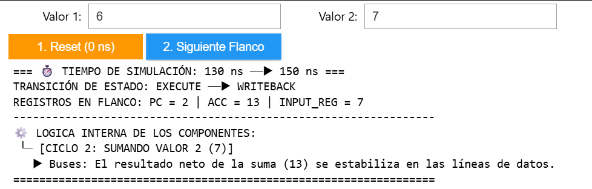
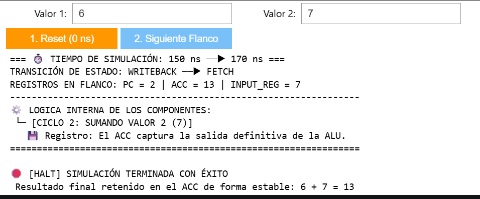

Simulador Interactivo de una CPU en Hardware
En esta guía vas a construir paso a paso un procesador segmentado por software capaz de ejecutar instrucciones binarias, simular flancos de reloj interactivos mediante Widgets en Jupyter, registrar los estados del procesador en JSON y graficar los picos del acumulador con Matplotlib.
🗺️ Brújula del Proyecto: Estructura de Archivos
Esta es la disposición exacta que debe tener tu espacio de trabajo en VS Code al finalizar el tutorial:
HARDWARE_PYTHON_VERILOG/ ├── .venv/ # Creado automáticamente por UV ├── NOTEBOOKS/ # Tu laboratorio de pruebas │ ├── 01_Importaciones.ipynb │ ├── 02_Simulacion.ipynb │ └── 03_Analisis.ipynb ├── src/ # Núcleo del hardware físico │ ├── __init__.py │ └── Hardware_logic.py ├── .gitignore ├── .python-version ├── main.py ├── pyproject.toml # Configuración de dependencias ├── README.md ├── requirements.txt └── uv.lock
La carpeta .venv/, el archivo de bloqueo determinista uv.lock, la asignación de versiones de Python y las descargas pesadas de paquetes como ipywidgets o matplotlib se inicializan solas.
La carpeta de lógica pura (src/), el archivo estructurado del core de la CPU y los tres cuadernos de Jupyter independientes.
🚀 Paso 1: Inicialización con UV y Dependencias ↓
Usa uv para armar el entorno de aislamiento limpio de forma instantánea. Abre la terminal en la carpeta raíz y ejecuta:
uv init hardware-python-verilog
Reemplaza tu archivo pyproject.toml con este bloque para declarar las dependencias de control gráfico y hardware:
[project]
name = "hardware-python-verilog"
version = "0.1.0"
description = "Simulador interactivo de CPU con MyHDL y Python"
readme = "README.md"
requires-python = ">=3.14"
dependencies = [
"ipywidgets>=8.1.8",
"matplotlib>=3.10.9",
"myhdl>=0.11.51",
"pandas>=3.0.3",
]
💾 Paso 2: El Corazón Físico (src/Hardware_logic.py) ↓
Crea la carpeta src/ y añade un archivo vacío llamado __init__.py para indicarle a Python que es un paquete interno. Luego, crea Hardware_logic.py y pega el diseño de hardware basado en la FSM (Máquina de Estados Finitos):
from myhdl import block, always_seq, Signal
from enum import Enum
class State(Enum):
FETCH = 0
DECODE = 1
EXECUTE = 2
WRITEBACK = 3
@block
def cpu_core(clk, pc, acc, input_reg, fsm_state_out):
state = Signal(State.FETCH)
@always_seq(clk.posedge, reset=None)
def fsm():
fsm_state_out.next = state
if state == State.FETCH:
state.next = State.DECODE
elif state == State.DECODE:
state.next = State.EXECUTE
elif state == State.EXECUTE:
acc.next = acc + input_reg # Operación de la ALU
state.next = State.WRITEBACK
elif state == State.WRITEBACK:
pc.next = pc + 1
state.next = State.FETCH
return fsm
📓 Paso 3: Cuaderno 01 - Diagnóstico de Entorno ↓
Crea la carpeta NOTEBOOKS/. En tu primer archivo 01_Importaciones.ipynb, coloca la siguiente celda de verificación de salud de MyHDL:
# Celda 1: Verifica que tu entorno funciona
import myhdl
print(f"MyHDL cargado correctamente. Versión: {myhdl.__version__}")
🕹️ Paso 4: Cuaderno 02 - Simulador Interactivo de CPU ↓
Este es el núcleo dinámico de tu laboratorio. En 02_Simulacion.ipynb, pega el simulador reactivo con control de flancos de subida. Generará automáticamente un log de telemetría llamado cpu_log.json:
import sys
import os
import json
import ipywidgets as widgets
from IPython.display import display, clear_output
from myhdl import Signal, intbv, Simulation, delay, always, now
# Configuración de ruta hacia la lógica de hardware interna
sys.path.append(os.path.abspath(os.path.join(os.getcwd(), '..')))
from src.Hardware_logic import cpu_core, State
class Hardwired_Simulator:
def __init__(self):
self.clk = Signal(bool(0))
self.pc = Signal(intbv(0))
self.acc = Signal(intbv(0))
self.input_reg = Signal(intbv(0))
self.state_out = Signal(State.FETCH)
self.historial = []
self.dut = cpu_core(self.clk, self.pc, self.acc, self.input_reg, self.state_out)
@always(delay(10))
def clkgen():
self.clk.next = not self.clk
self.sim = Simulation(self.dut, clkgen)
self.op_a = 0
self.op_b = 0
self.ciclo_instruccion = 1
self.terminado = False
def reset_hardware(self, op_a, op_b):
self.op_a = op_a
self.op_b = op_b
self.ciclo_instruccion = 1
self.terminado = False
self.historial = []
self.pc.next = 0
self.acc.next = 0
self.input_reg.next = 0
self.state_out.next = State.FETCH
self.sim.run(1)
def avanzar_un_estado(self):
if self.terminado:
return
if self.ciclo_instruccion == 1:
self.input_reg.next = self.op_a
elif self.ciclo_instruccion == 2:
self.input_reg.next = self.op_b
estado_previo = self.state_out.val
while self.state_out.val == estado_previo:
self.sim.run(1)
if self.state_out.val == State.FETCH:
if self.ciclo_instruccion == 1:
self.ciclo_instruccion = 2
elif self.ciclo_instruccion == 2:
self.terminado = True
self.historial.append({
'Tiempo': f"{now()} ns",
'Estado': self.state_out.val.name,
'PC': int(self.pc),
'ACC': int(self.acc),
'Input': int(self.input_reg)
})
with open('cpu_log.json', 'w') as f:
json.dump(self.historial, f)
# --- INTERFAZ GRÁFICA ---
simulador = Hardwired_Simulator()
txt_a = widgets.IntText(description='Valor 1:', value=6)
txt_b = widgets.IntText(description='Valor 2:', value=7)
btn_init = widgets.Button(description="1. Reset (0 ns)", button_style='warning')
btn_next = widgets.Button(description="2. Siguiente Flanco", button_style='primary', disabled=True)
out_panel = widgets.Output()
def iniciar_sim(b):
simulador.reset_hardware(txt_a.value, txt_b.value)
btn_next.disabled = False
with out_panel:
clear_output(wait=True)
print(f"=== ⏱️ INSTANTE CERO: ESTADO DE RESET (0 ns) ===")
print(f"REGISTROS: PC = 0 | ACC = 0 | INPUT_REG = 0 | ESTADO = FETCH")
print("-" * 65)
print("⚙️ LÍNEA DE TIEMPO DIGITAL:")
print(f" ▶ Circuito inicializado. El bus espera recibir el Valor 1 ({txt_a.value}).")
print("=" * 65)
def procesar_paso(b):
tiempo_origen = now()
estado_origen = simulador.state_out.val.name
ciclo_origen = simulador.ciclo_instruccion
simulador.avanzar_un_estado()
with out_panel:
clear_output(wait=True)
print(f"=== ⏱️ TIEMPO DE SIMULACIÓN: {tiempo_origen} ns ──▶ {now()} ns ===")
print(f"TRANSICIÓN DE ESTADO: {estado_origen} ──▶ {simulador.state_out.val.name}")
print(f"REGISTROS EN FLANCO: PC = {int(simulador.pc)} | ACC = {int(simulador.acc)} | INPUT_REG = {int(simulador.input_reg)}")
print("-" * 65)
print("⚙️ LÓGICA INTERNA DE LOS COMPONENTES:")
if ciclo_origen == 1:
print(f" └─ [CICLO 1: CARGANDO VALOR 1 ({simulador.op_a})]")
if estado_origen == "DECODE":
print(f" ▶ ALU (Combinacional): ACC (0) + INPUT ({simulador.op_a}) = {simulador.op_a}")
elif estado_origen == "EXECUTE":
print(f" ▶ Buses: El valor acumulado inicial ({simulador.op_a}) se transfiere.")
elif estado_origen == "WRITEBACK":
print(f" 💾 Registro: El ACC se actualiza con el primer operando: {simulador.op_a}")
else:
print(f" └─ [CICLO 2: SUMANDO VALOR 2 ({simulador.op_b})]")
if estado_origen == "DECODE":
print(f" ▶ ALU (Combinacional): Operando real: ACC ({simulador.op_a}) + INPUT ({simulador.op_b}) = {simulador.op_a + simulador.op_b}")
elif estado_origen == "EXECUTE":
print(f" ▶ Buses: El resultado neto de la suma ({simulador.op_a + simulador.op_b}) se estabiliza.")
elif estado_origen == "WRITEBACK":
print(f" 💾 Registro: El ACC captura la salida definitiva de la ALU.")
print("=" * 65)
if simulador.terminado:
btn_next.disabled = True
print("\n🛑 [HALT] SIMULACIÓN TERMINADA CON ÉXITO")
print(f" Resultado final retenido en el ACC de forma estable: {simulador.op_a} + {simulador.op_b} = {int(simulador.acc)}")
btn_init.on_click(iniciar_sim)
btn_next.on_click(procesar_paso)
display(widgets.HBox([txt_a, txt_b]), widgets.HBox([btn_init, btn_next]), out_panel)
📊 Paso 5: Cuaderno 03 - Análisis Metrológico y Gráficas ↓
En el último archivo 03_Analisis.ipynb, lee la telemetría del archivo JSON generado dinámicamente y plotea la respuesta del acumulador usando un gráfico de pasos (Step Plot):
import json
import pandas as pd
import matplotlib.pyplot as plt
try:
with open('cpu_log.json', 'r') as f:
datos = json.load(f)
df = pd.DataFrame(datos)
print("--- REPORTE DE EJECUCIÓN (PASO A PASO) ---")
for index, row in df.iterrows():
print(f"Paso {index} | Estado: {row['Estado']} | ACC: {row['ACC']}")
print("-" * 40)
# Graficar comportamiento eléctrico discreto
plt.figure(figsize=(10, 4))
plt.step(df.index, df['ACC'], where='post', marker='o', color='red')
plt.title("Evolución del ACC durante la ejecución paso a paso")
plt.xlabel("Estado de la máquina")
plt.ylabel("Valor del ACC")
plt.grid(True)
plt.show()
except FileNotFoundError:
print("No se encontró 'cpu_log.json'. Ejecuta la simulación interactiva primero.")
📺 Secuencia de Validación en Tiempo Real
Usa esta guía visual para comprobar el estado de los registros, buses de la ALU y flancos de reloj síncronos en cada paso de la ejecución.
1. Estado Inicial del Panel
La interfaz gráfica de usuario (GUI) carga los valores por defecto (Valor 1: 6, Valor 2: 7) con el botón de flanco deshabilitado hasta inicializar el hardware.

2. Instante Cero: Estado de Reset (0 ns)
Al presionar 1. Reset, el circuito limpia sus registros internos de manera asíncrona. La FSM se posiciona en FETCH esperando la primera orden de muestreo.

3. Ciclo 1: Entrada en Modo FETCH (30 ns)
Primer flanco de subida. Se lee la instrucción binaria y las líneas lógicas de control preparan la lectura del primer operando del bus de datos.

4. Ciclo 1: Decodificación y Carga de Entrada (50 ns)
La FSM pasa a DECODE. El registro de entrada de hardware copia de forma limpia el primer operando: INPUT_REG = 6.

5. Ciclo 1: Estabilización Combinacional de la ALU (70 ns)
Fase EXECUTE. La ALU calcula de forma combinacional instantánea en base a los canales actuales: ACC (0) + INPUT (6) = 6.

6. Ciclo 1: Escritura Síncrona en el Acumulador (90 ns)
Fase WRITEBACK. El flanco síncrono impacta el resultado de la ALU directamente en el flip-flop del acumulador (ACC = 6). El contador de programa cambia a PC = 1.

7. Ciclo 2: Búsqueda de la Siguiente Instrucción (110 ns)
Comienza la segunda vuelta de la FSM (FETCH). El sistema detecta que el ciclo uno concluyó de forma correcta y conmuta las líneas lógicas para operar con el segundo valor.

8. Ciclo 2: Decodificación y Carga de Entrada Dos (130 ns)
La máquina entra en DECODE para el ciclo dos. El bus de entrada se actualiza de forma segura al segundo operando: INPUT_REG = 7.

9. Ciclo 2: Suma Neta Estabilizada en la ALU (150 ns)
Fase EXECUTE del ciclo dos. Las compuertas de la ALU procesan los dos estados retenidos en vivo: ACC (6) + INPUT (7) = 13.

10. [HALT] Finalización de la Simulación (170 ns)
La FSM concluye la secuencia completa. El botón de avance se deshabilita automáticamente y el resultado neto queda perfectamente enclavado de forma estable en el acumulador físico.
